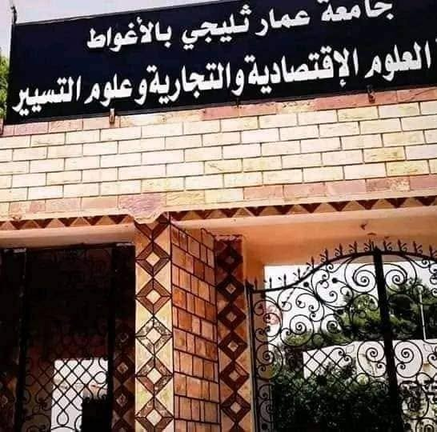
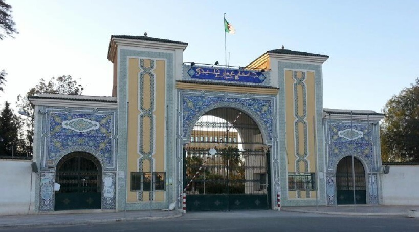
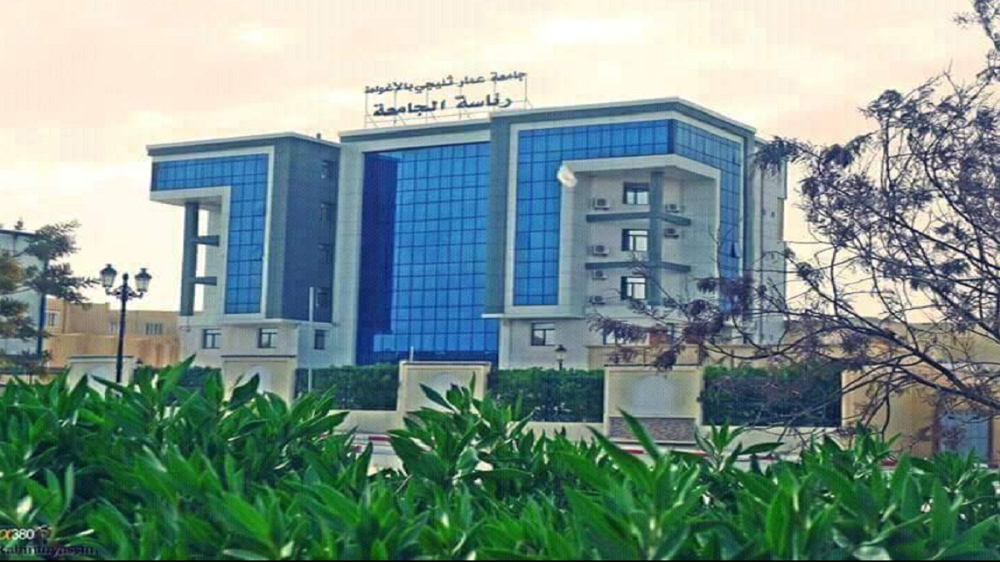
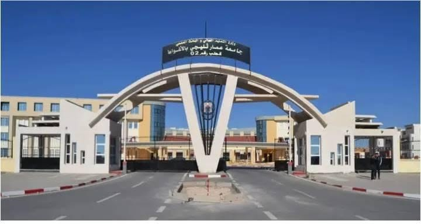

01الاقتصاد · التجارة · التسيير
فضاء أكاديمي متخصص في الاقتصاد والتجارة وعلوم التسيير، لدعم التكوين والبحث في المجالات الاقتصادية.
كلية الاقتصاد
- كلية العلوم الاقتصادية والتجارية وعلوم التسيير

02العلوم الإنسانية · الحقوق · اللغات
فضاء أكاديمي يجمع الآداب واللغات والعلوم الإسلامية والهندسة المدنية والحقوق.
القطب 1
- كلية الآداب واللغات
- كلية العلوم الإسلامية
- كلية الهندسة المدنية
- كلية الحقوق

03الإدارة المركزية
المقر المركزي للجامعة، ويضم كلية الطب والعلوم الاجتماعية والعلوم الإنسانية.
القطب 1 - مقر رئاسة الجامعة
- كلية الطب
- كلية العلوم الاجتماعية
- كلية العلوم الإنسانية

04العلوم · التكنولوجيا · الرياضة
بيئة تعليمية للعلوم والتكنولوجيا والابتكار، إلى جانب التكوين الرياضي.
القطب 2
- كلية التكنولوجيا
- كلية العلوم
- معهد الرياضة